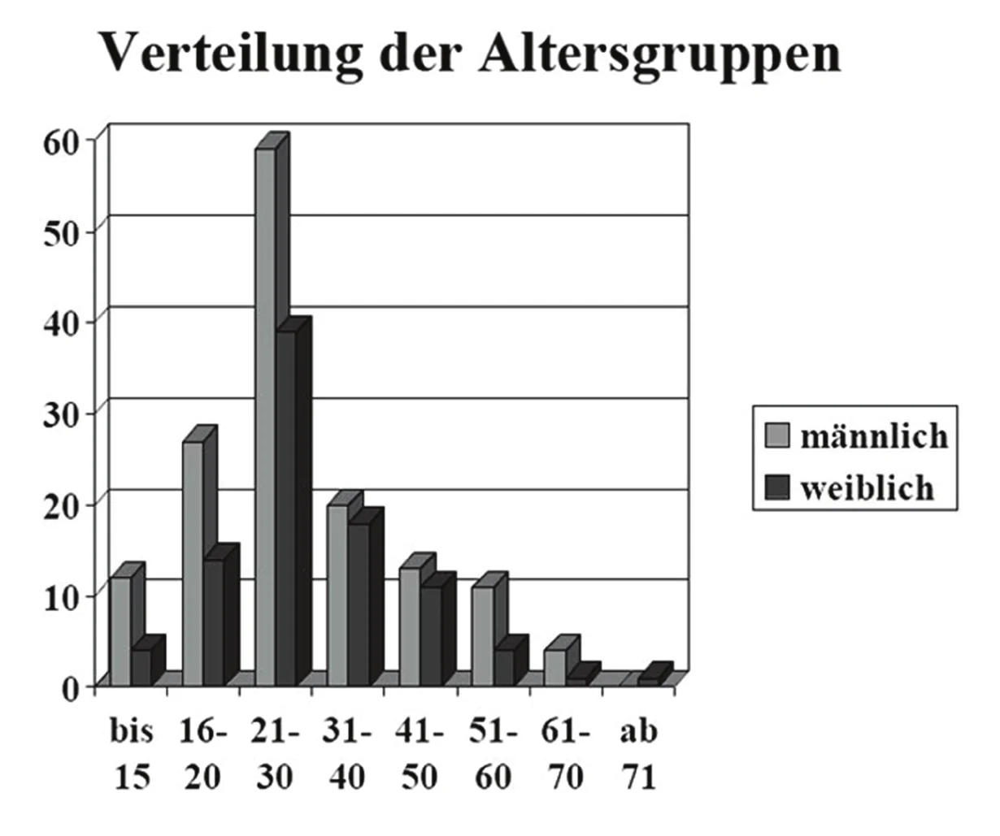
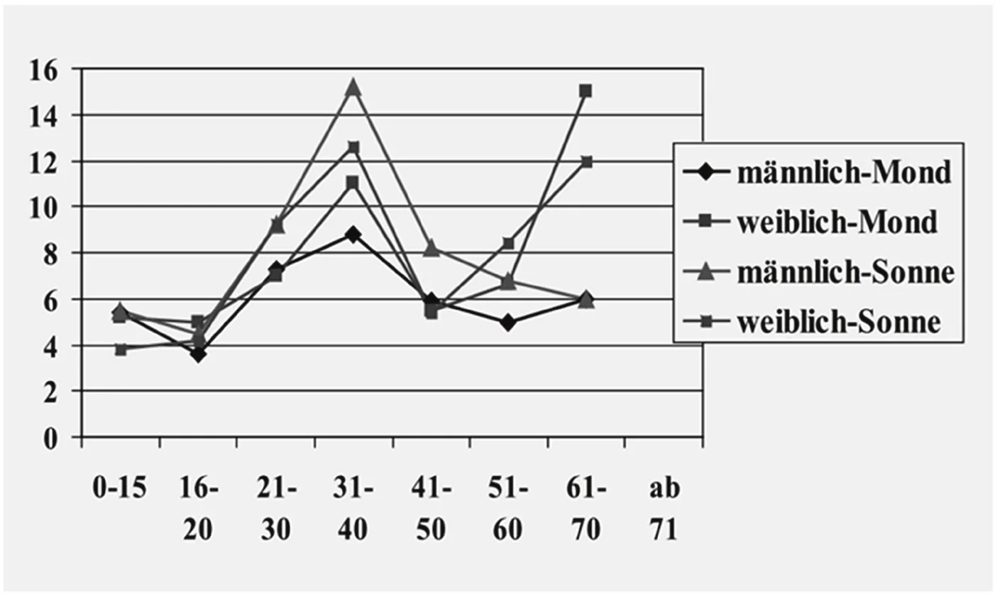
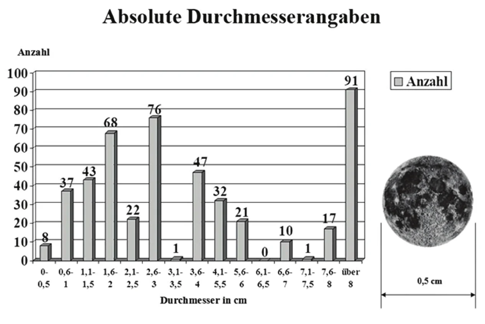

La fiabilité des estimations de taille par les témoins d'ovni est une question difficile – nous savons que les témoins se trompent sur la taille, mais de quel facteur ? L'auteur a mené des expériences avec plusieurs groupes de personnes afin d'évaluer les écarts à la taille apparente réelle selon le sexe et la tranche d'âge.
Nous rencontrons toujours des problèmes lorsque, au cours d'une enquête sur un ovni,
on demande à un observateur d'évaluer la taille de l'objet qu'il a vu dans le
ciel nocturne. Certains témoins en donnent la taille en mètres pour souligner à quel point il était étrange. Ils
disent à l'enquêteur que c'était aussi grand que la pleine lune
ou ça faisait 50 m de long.
Mais
personne n'est capable d'estimer la taille réelle d'un phénomène nocturne quand on ne sait pas ce que c'était ou
sans une chose connue à laquelle comparer l'ovni. Il pouvait s'agir
d'un objet assez petit et très proche, ou d'un objet considérablement plus grand et plus éloigné. Dans les deux cas,
il apparaîtrait à l'observateur comme quelque chose de même taille. Ce n'est que lorsqu'une comparaison est
possible, par exemple quand l'objet se trouve devant une forêt, que la taille peut être calculée. Dans les observations nocturnes ordinaires, les enquêteurs n'ont
généralement aucune chance d'évaluer sa taille véritable, et pourtant ils voudraient avoir une idée de la taille de
l'objet observé.
Il est utile de documenter aussi précisément que possible l'impression optique qu'a eue le témoin. Pour ce faire, les enquêteurs du GEPGEP est l'acronyme de Gesellschaft zur Erforschung des UFO-Phänomens (Société pour l'étude du phénomène ovni) : https://www.ufo-forschung.de/ demandent la taille apparente de l'objet. Le questionnaire comporte une question à cet effet, et une question de contrôle, sur laquelle nous reviendrons plus loin. La réponse est censée donner une idée de l'objet observé. Mais – quelle est la fiabilité de l'information que donne le témoin sur la taille apparente de ce qu'il ou elle a observé ?
Dans quelques cas, lorsque l'altitude de la couverture nuageuse ou l'angle d'observation étaient connus, et que l'objet se trouvait assurément dans la couverture nuageuse ou au-dessous, la taille apparente permet de tirer des conclusions sur la taille réelle, ou plutôt sur le diamètre minimal et maximal de la chose qui a été vue.
Mais j'ai plus souvent constaté que la taille apparente était estimée beaucoup trop grande par l'observateur. Certains témoins donnaient des tailles qui, si elles étaient exactes, signifieraient que l'objet observé leur aurait masqué tout leur champ de vision ! Avec le test des 57 cm (un objet, par exemple un bouton, est placé à 57 cm de l'œil du témoin : aurait-il caché l'ovni ?) ou un test utilisant un objet connu tenu à bout de bras, j'ai entendu des estimations de taille plusieurs fois supérieures à ce qu'elles auraient dû être.
Je me suis très vite rendu compte que les estimations faites par les témoins doivent être fortement réduites. D'autres chercheurs sur les ovnis l'ont confirmé.
Mais de quel pourcentage ou de combien faut-il réduire les estimations ? Je voulais obtenir des chiffres plus précis par une analyse statistique des estimations de la taille apparente du Soleil et de la pleine Lune. La pleine Lune et le Soleil sont, après tout, souvent observés. Je pensais que les témoins seraient capables d'en juger assez précisément la taille apparente.
J'ai établi un questionnaire et – avec l'aide du groupe CENAP, basé à Mannheim – demandé à des parents, amis, connaissances, voisins et visiteurs de nos conférences de m'indiquer le diamètre apparent de la Lune et du Soleil. Les sujets devaient se rappeler l'aspect des deux astres, puis tendre le bras en tenant un mètre pliant, et dire quelle était leur taille. Le questionnaire relevait aussi le sexe et l'âge de la personne.
Au total, nous avons interrogé 238 personnes, 146 hommes et 92 femmes. La répartition par âge est présentée sur la figure 1 :

Il est évident que, dans certaines tranches d'âge, trop peu de personnes ont été interrogées pour une analyse statistique plus approfondie. Tous les résultats ne seront donc pas représentatifs. On sait aussi que la pleine Lune peut sembler varier de taille sur le fond du ciel nocturne. Elle paraît plus grande près de l'horizon que haut dans le ciel. Cette erreur de perception bien connue (la taille ne varie pas réellement) peut toutefois être négligée au regard des écarts d'estimation attendus. Les constats qui suivent ne sont pas statistiquement précis, mais ils montrent des tendances générales.

La figure 2 montre la relation entre les tranches d'âge et leurs estimations moyennes du diamètre. Jusqu'à 20 ans, les valeurs sont semblables, mais il y a une différence importante jusqu'à 40 ans. On voit que les sujets masculins avaient tendance à surestimer grossièrement la taille du Soleil, mais donnaient les valeurs les plus basses pour la taille de la Lune. Cela pourrait venir de ce que le Soleil brillant paraît plus grand aux hommes. Les femmes montrent aussi une certaine tendance à surestimer la taille du Soleil. Si ces chiffres étaient confirmés par un plus grand nombre de sujets, nous pourrions peut-être conclure que la tranche d'âge des 20 à 40 ans tend en général à juger le diamètre apparent des objets brillants plus grand que celui des objets moins brillants. Entre 41 et 60 ans, les deux sexes estiment des valeurs semblables pour le diamètre du Soleil, bien que les hommes tendent à donner des valeurs plus élevées. Avec l'âge, les hommes ont eu tendance à mieux juger que les femmes. Les personnes interrogées de 61 à 70 ans se rapprochaient de nouveau des valeurs données par celles de moins de 15 ans.
On voit aussi que les tailles estimées commencent à un diamètre de 4 cm. Or le diamètre apparent réel de la pleine Lune et du Soleil est de 0,5 cm. Le diagramme montre de combien la taille est estimée au-dessus de la valeur réelle.
Si l'on regarde les diamètres le plus souvent avancés par chaque sexe, on voit que les hommes ont généralement indiqué des tailles de Lune de 1,6 à 2 cm. Le Soleil était jugé un peu plus grand, entre 2,6 et 3 cm. La situation est semblable chez les femmes interrogées. Jusqu'à la taille de 3 cm, les personnes interrogées donnaient encore plusieurs tailles intermédiaires ; au-delà, seulement des chiffres ronds.
En utilisant toutes les données (figure 3), on voit que, sur les 238 personnes interrogées, seules 8 ont donné une
estimation allant jusqu'à 0,5 cm, et 37 personnes ont avancé des valeurs comprises entre 0,6 et 1 cm. Cela signifie
que seuls 20 pour cent de tous les participants ont répondu par une estimation inférieure à 1 cm. Près de 32 pour
cent ont donné des valeurs comprises entre 2,6 et 3 cm. 91 personnes (soit 38 pour cent) ont avancé des valeurs
bien au-dessus de 8 cm. J'ai entendu des chiffres de 1 mètre ! Je suppose qu'il s'agissait de personnes qui
n'avaient tout simplement pas compris ce que je voulais qu'elles fassent. Certaines ont mis le mètre de côté en
disant Je n'ai pas besoin d'une telle aide
, tout en essayant d'estimer le diamètre les deux bras tendus – ce
qui a donné des valeurs grossièrement surestimées.

Sur les 238 personnes, 32 ont donné la même valeur pour la Lune et le Soleil, même si elles se sont trompées. La Lune a été estimée en moyenne à un diamètre de 7,05 cm, le Soleil – avec une moyenne de 7,98 cm – un peu plus grand. Ensemble, cela donne une moyenne de 7,5 cm. C'est 15 fois les 0,5 cm réels. On voit que les estimations de taille que nous rapportent les témoins d'ovnis ne sont pas exactes.
Que pouvons-nous conclure de cet exercice ? Tout d'abord, notre enquête a montré que les objets brillants seront jugés plus grands que les objets plus sombres. C'était déjà connu en psychologie de la perception sous le nom d'illusion d'irradiation. Une tache claire sur un fond sombre paraît plus grande qu'une zone sombre par ailleurs identique sur un fond clair. J'en ai conclu en outre que le diamètre apparent des astres relativement bien connus et souvent vus que sont la Lune et le Soleil est jugé, en moyenne, 15 fois plus grand qu'il ne l'est réellement. Évidemment, nous devons nous demander à quel point les estimations sont fausses lorsqu'il s'agit d'un objet inconnu vu seulement pendant un très court laps de temps. On sent que les erreurs peuvent être encore plus grandes. Et plus le temps écoulé entre l'observation et l'enquête est long, plus les estimations seront incertaines. La seule exception sera les cas où le témoin a effectivement remarqué des parties de bâtiments ou du paysage et jugé la taille apparente par comparaison. Cela peut aussi se faire lors des déplacements d'enquête de terrain.
Je n'en conclus pas que les estimations de taille que nous recueillons auprès des témoins devraient être automatiquement réduites d'un certain facteur. Toutefois, le résultat de cette étude devrait nous aider, nous enquêteurs de terrain, à considérer les estimations de taille d'un œil critique. Le GEP a ajouté à son questionnaire une question de contrôle demandant la taille apparente de la pleine Lune, afin d'évaluer les erreurs d'estimation de chaque témoin. Lors d'une enquête de terrain, on peut demander aux observateurs d'évaluer certains éléments du paysage. Les conclusions tirées d'un compte rendu d'observation devraient toujours l'être en gardant ces faits à l'esprit.
(Traduit de l'allemand par Ulrich Magin). Peiniger, Hans-Werner: “Es war so groß wie der Vollmond”, in Das Rätsel: Unbekannte Flugobjekte, Moewig (Rastatt), , pages 45–51